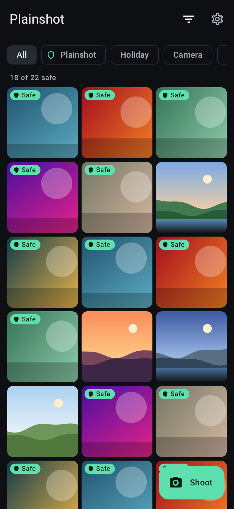
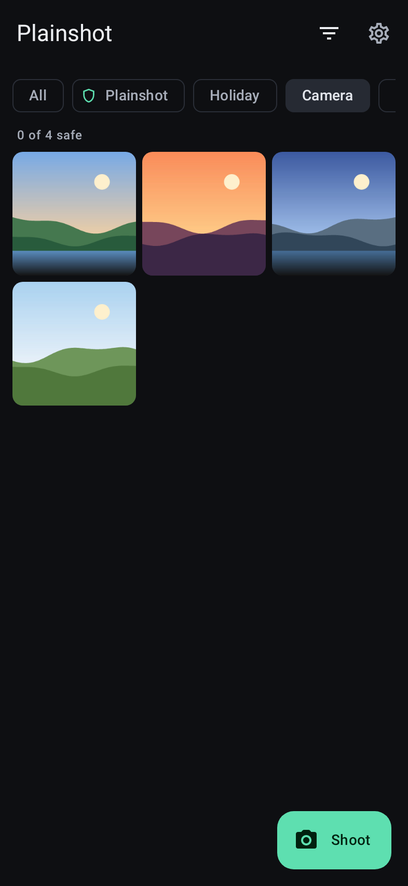
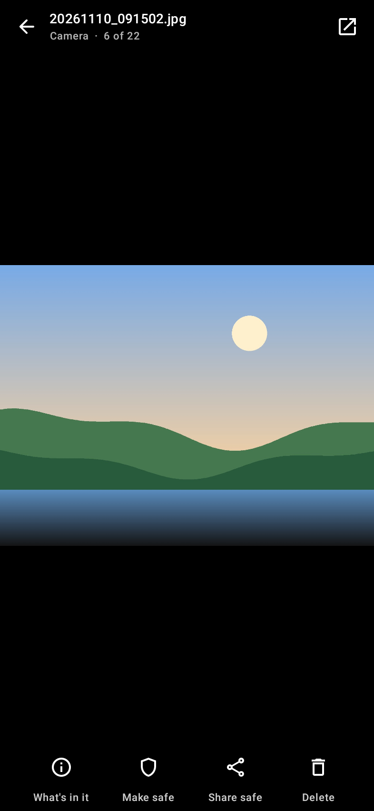
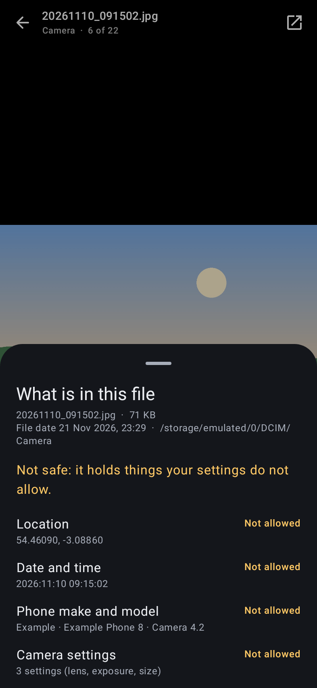
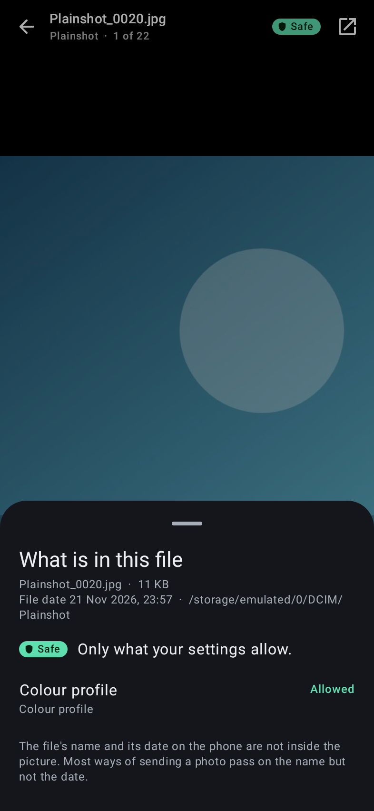
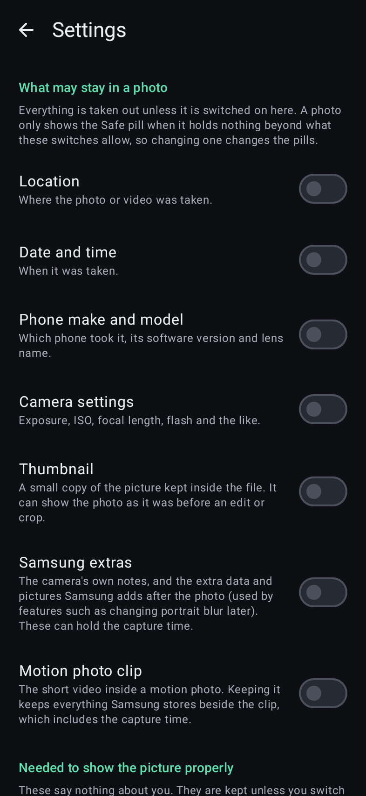
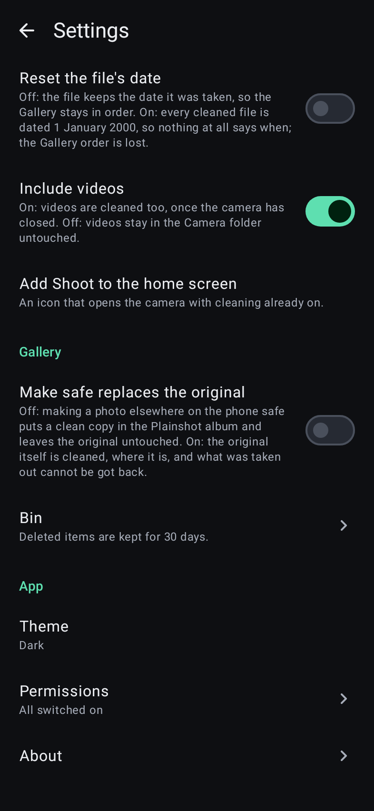
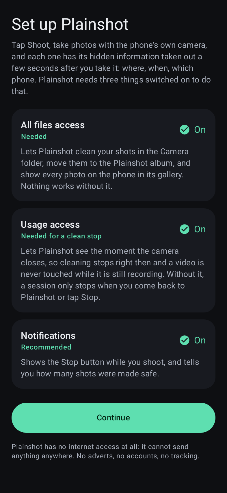

Take the photo. Leave everything else behind.
Every photo your phone takes carries hidden information: where you were, the date and time, which phone you have. Plainshot takes it out a few seconds after you press the shutter.
Tap Shoot, use the phone's own camera with every mode it has, and what lands in your album is the picture and nothing else. Plainshot cannot go online, so nothing is sent anywhere.
Download for AndroidHow to install
- Version 1.0
- Android 13 or later
- 2.7 MB
Free, with nothing to unlock. No adverts, no account with the developer, no tracking. Compare or read the release notes.
Chrome may say the file might be harmful. It shows this for app files that do not come from Google Play. Choose Download anyway.

- No subscriptionEvery feature is in the free app.
- No advertsNone in the app and none on this site.
- No internet accessIt cannot send or fetch anything.
- The picture untouchedOnly the hidden details go.
A look inside
These are the real screens, drawn from the app's own code with made-up photos. Swipe or scroll sideways to see them all.







How it works
There is nothing to buy and no account to make. Plainshot cleans the photos on your phone itself.
Tap Shoot
The phone's own camera opens, with every mode it has.
Take your photos
Each one is cleaned about three seconds after you take it.
Find them clean
They wait in the Plainshot album, with a Safe pill, and the original is gone.
Everything is in, and all of it is free
Nothing below is held back for a paid tier, because there is no paid tier.
Cleaning
- Cleans as you shoot
- Each photo is cleaned a few seconds after you take it and moved to its own album. The original is deleted, so the only copy is the clean one.
- Everything off unless you say
- Location, date and time, phone model, camera settings, thumbnail, Samsung's extras and the motion clip all go. Each has its own switch.
- The picture is never re-made
- The information is taken out and the picture is copied across byte for byte. No quality is lost.
- Always on
- A switch that cleans every photo the phone takes, however the camera was opened.
Checking
- A gallery with a Safe pill
- Every photo on the phone, with a Safe pill on the ones that hold nothing beyond what your settings allow.
- What is in this file
- Open any photo and see, in plain words, what it carries: the place, the time, the phone.
- Names that say nothing
- Plainshot_0001, Plainshot_0002, instead of the date and time.
Sharing
- Make safe
- Select any photos on the phone and tap the shield. A clean copy goes into the Plainshot album.
- Share safe
- In your phone's share menu from any app. A cleaned copy is what gets sent.
- Photos and videos
- JPEG, HEIC, PNG and WebP photos, and MP4 and MOV videos.
Nothing leaves your phone
No internet access
Plainshot does not ask Android for the internet permission. You can check: Settings, Apps, Plainshot, Permissions.
No servers
There are no accounts and no servers. The developer receives nothing.
No ads, no tracking
There is no advertising, analytics or tracking, in the app or on this site.
Installing and updating
Plainshot is not on Google Play, so your phone asks a couple of extra questions the first time.
Download the app file
Tap Download on your phone. The file is called Plainshot.apk and is about 2.7 MB. If Chrome says the file might be harmful, choose Download anyway.
Allow the install
Open the file. The first time, Android asks you to allow your browser to install apps. Allow it, go back and tap Install. If Google Play Protect steps in, choose More details, then Install anyway.
Updating later
Plainshot tells you when a newer version is out. Install the new file over the old one and everything you have saved is kept.
Version 1.0, released 18 November 2026. See the release notes, or check your download.
Questions
Is Plainshot really free?
Yes. There is no paid version, no subscription and no adverts. See the comparison.
Does it change how my photos look?
No. It uses the phone's own camera, and the picture is copied across byte for byte. Only the hidden information is taken out.
What does it take out?
Location, date and time, phone model, camera settings, the small preview, Samsung's extras and the motion clip. Each can be kept with its own switch.
Does it hide what is in the picture?
No. A street sign, a face or a reflection in the picture is still in the picture.
Can a cloud backup get the original first?
It can. The camera saves each shot with its information and Plainshot cleans it about three seconds later. A backup that uploads the instant a photo is saved could take the original.
What about RAW files?
They are left where the camera put them and never get the Safe pill. HEIC photos keep their rotation and colour, because in a HEIC file those are part of the picture.
Why does it ask for all files access and usage access?
All files access lets it clean photos in the Camera folder. Usage access lets it see when the camera closes. Android locks usage access for downloaded apps; the app shows how to allow it.
How do I update Plainshot?
Plainshot has no internet access, so it cannot tell you about new versions. Look at the release notes now and then, and install a new version over the old one.
Share the picture, not where you were
Free, with no adverts and nothing to unlock. Made by the developer of several other free Android apps: see them all.